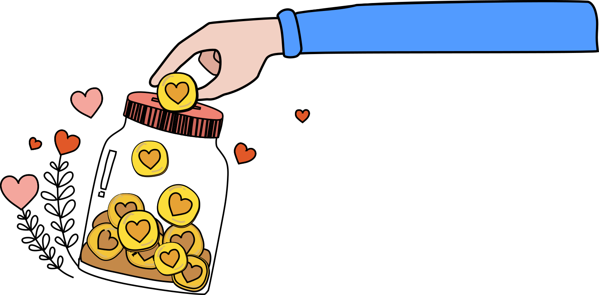
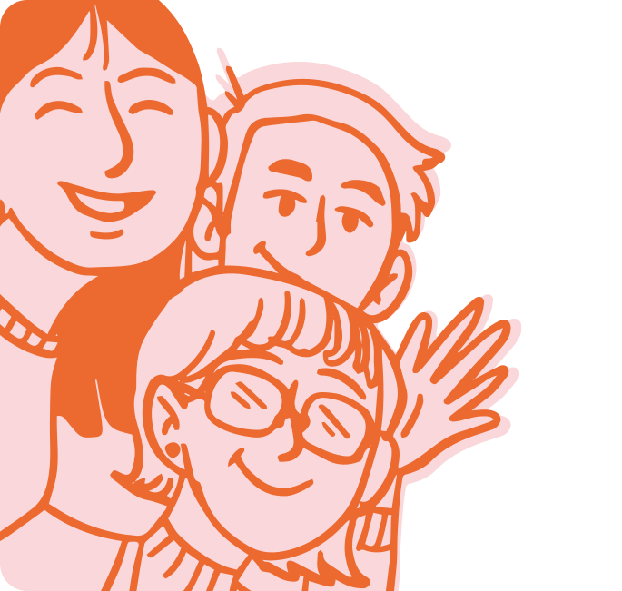

你現在閱讀的並不是真的文案這些文字，只顯示文案將會擺放的位置我們會稱呼案這些文顯示文案會稱呼這些文案為假字。你現在閱讀的並不是真的文案這些文字。
善長如希望以慈善捐款方式支持本會工作，可以以下捐款方法：
* 懷愛會為香港《税務條例》第 88 條 獲豁免繳税的慈善機構，捐款善長請與本會聯絡，提供姓名、聯絡方法及捐款證明，如銀行入數紙及轉數快截圖等，以便本會安排捐款收據。

申請加入成為懷愛會義工會員，可聯絡懷愛會同事 (電話：26491014)。
如申請者年齡未滿十八歲，必須由家長代為申請。
懷愛會在收到你申請後，會審核你所提供的資料。如你獲接納成為懷愛會義工會員後，稍後會個別通知義工會員編號。所有義工會員須遵守懷愛會規則、指引、守則。